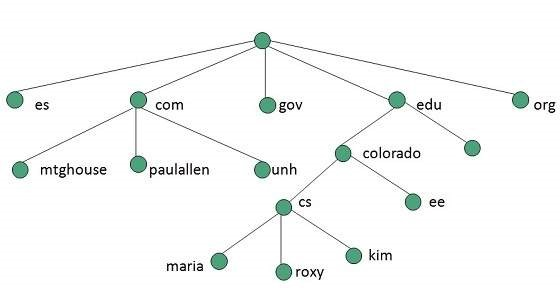
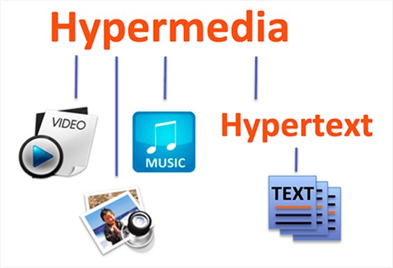

The World Wide Web, byname the Web, is described to be an information medium that can be accessed by computers across the globe via an internet connection. Founded by Timothy Berners Lee in 1989, his goal was to help researchers work more effectively, sharing and making information more accessible.

The web can also adapt and embrace future technology, like new protocols and types of networks. Originally, it was developed for the sharing of information between teams that were spread internationally – teams in the High Energy Physics community, in particular. However, the www gained much interest and soon spread to other areas, such as:
The Web provides access to a boundless number of documents and information that relate to each other through hypertext or hypermedia links. Hypertext will then allow users to use a word or phrase from a certain text to access documents containing information pertaining to that word or phrase. A hypertext documents is written in Hypertext Markup Language (HTML) along with its equivalent text and hyperlinks. The document will then be assigned to an online address called Uniform Resource Locator (URL).

the World Wide Web has been consistently evolving and improving. First with web 1.0 which used static web pages, mostly for publishing research. Then web 2.0 incorporated keyword searching and also gave rise to social media. Web 3.0 allowed for high mobility and access to different devices.The World Wide is one of the leading information retrieval services on the internet, giving its users a wide range of documents that use hypertext or hypermedia links to connect and link documents to other documents which contain similar or related information. Hypertext lets users select a word or words from a group of text and open up additional information related to the selected word(s) .
Did you know?
In the late 1960s the American Defense Advanced Projects Research Agency, ARPA (later DARPA) started a research project about computer networks. One of the first results of this project was an experimental four node network starting in 1969.References
Fowler, J., 2007. Agent-Based Concepts For Environmental Data. Environmental Data Exchange Network for Inland Water.Haynes, A., 2021. Loganix.
BL, T., 1992. WorldWideWeb - Summary.
Erik Gregersen, 2019. World Wide Web. [Online] Available at: https://www.britannica.com/topic/World-Wide-Web
Sharma, M., 2018. Web 1.0, Web 2.0 and Web 3.0 with their difference. [Online] Available at: https://www.geeksforgeeks.org/web-1-0-web-2-0-and-web-3-0-with-their-difference